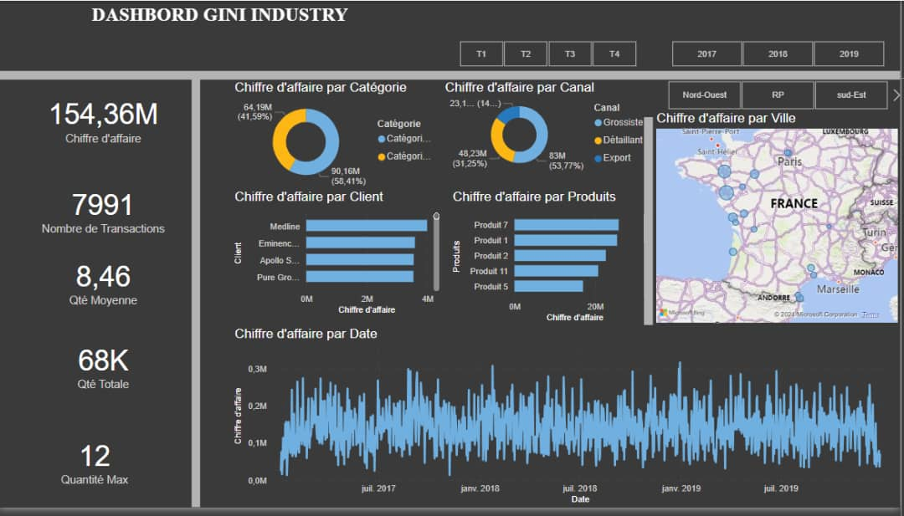
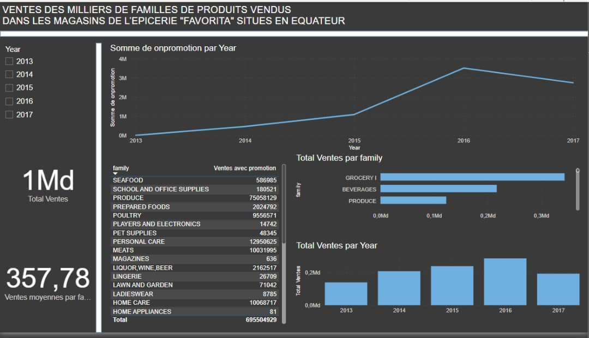
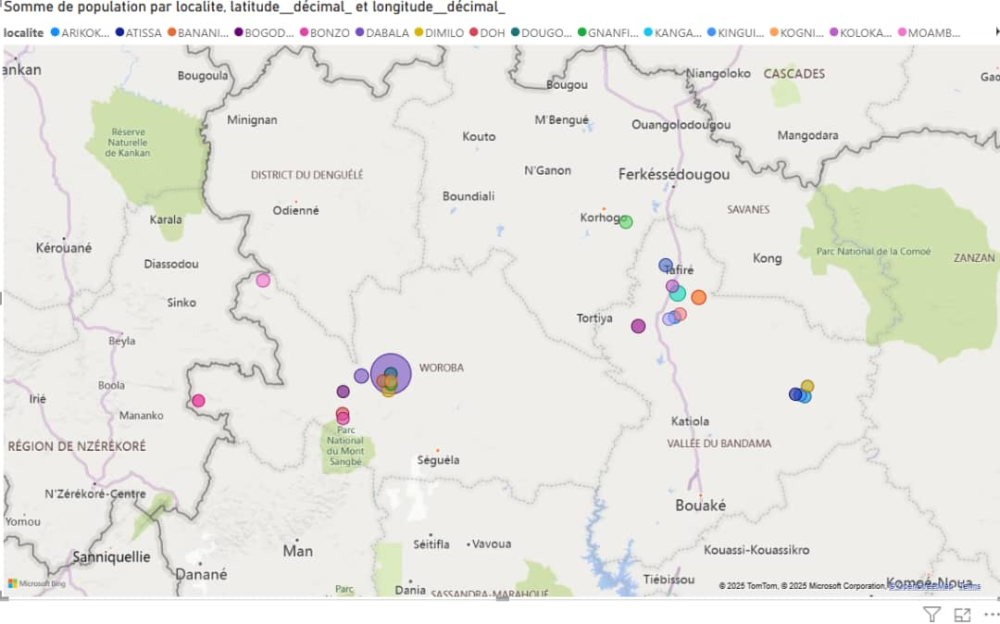
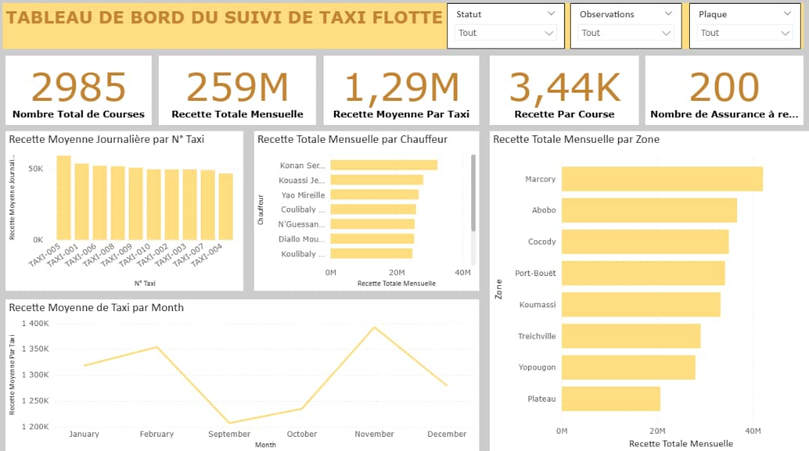
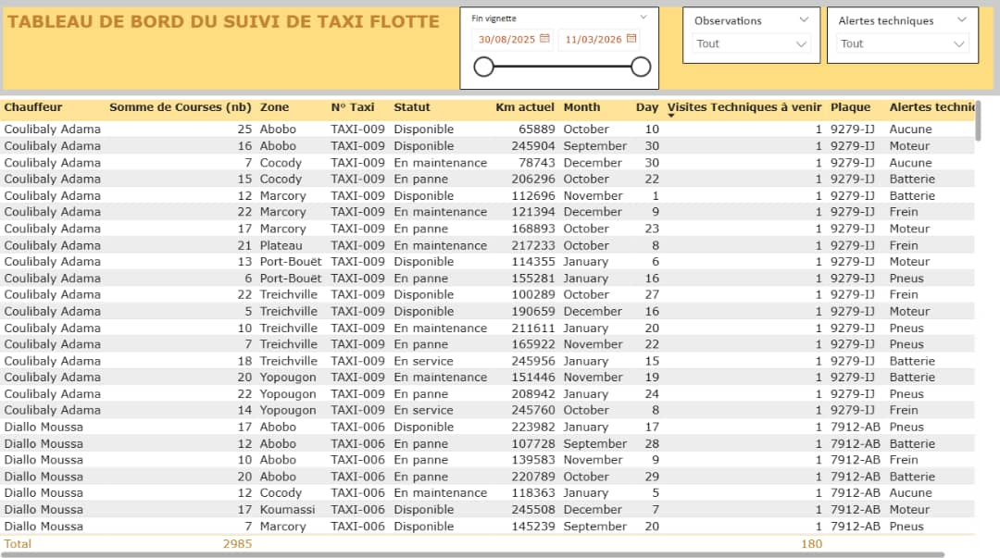
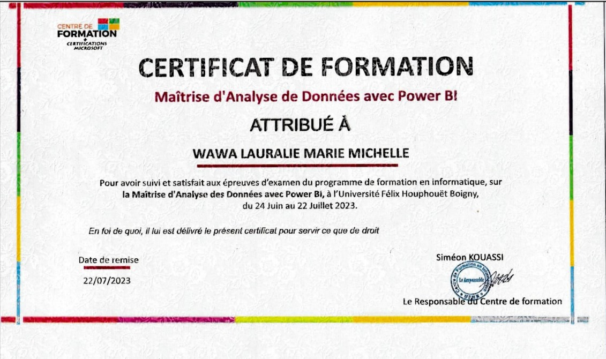

Dashboard GENI INDUSTRIE
Tableau de bord interactif pour le suivi des KPI industriels avec analyse prédictive des tendances.
Data Analyst / Scientist
Je suis WAWA LAURALIE, expert en analyse de données bancaires avec une passion pour transformer les chiffres en insights stratégiques. Fort d'un master en statistiques et économétrie, je conçois des solutions analytiques innovantes qui révolutionnent la prise de décision dans l'écosystème financier.
Mon expertise couvre l'ensemble du pipeline data : de la collecte et nettoyage des données jusqu'à la création de dashboards interactifs et la mise en place de modèles prédictifs adaptés aux enjeux bancaires modernes.
Conception et mise en œuvre d'un reporting pour la gestion des incidents liés à l'exploitation du réseau national du haut débit (rnhd)
Technologies : Python, Scikit-learn, Pandas, Power BI
ANALYSE DESCRIPTIVE DE SERIE TEMPORELLE ET PREVISION PAR LISSAGE EXPONENTIEL
Technologies : Python, Scikit-learn, Pandas, Power BI
ANALYSE DES DONNEES MULTIDIMENSIONNELLES CATEGORISER LES PAYS EN FONCTIONS DES FACTEURS SOCIO-ECONOMIQUES ET SANITAIRES QUI DETERMINENT LE DEVELOPPEMENT GLOBAL DU PAYS
Technologies : Python, Scikit-learn, Pandas, Power BI
L'assurance automobile constitue une part significative de l'activité des sociétés d'assurance IARD (Incendie, Accidents et Risques Divers). Ce secteur, tout en étant très compétitif, exige une compréhension approfondie des facteurs de risque associés à chaque police pour optimiser la tarification et la gestion des sinistres....
Technologies : Python

Tableau de bord interactif pour le suivi des KPI industriels avec analyse prédictive des tendances.

Dashboard d'analyse des ventes et optimisation des stocks basé sur des algorithmes de machine learning.

Visualisation géospatiale des risques bancaires avec analyse de concentration par région.

Tableau de bord pour le suivi des KPI de la flotte de taxis.

Tableau pour de la flotte de taxis.

Email : lauraliedjocewawa@gmail.com
Téléphone : +225 05 55 30 48 34
LinkedIn : linkedin.com/in/wawa-lauralie
Localisation : Abidjan, Côte d'Ivoire
Ouvert aux projets de consulting en data analytics bancaire, missions de transformation digitale et partenariats stratégiques. N'hésitez pas à me contacter pour discuter de vos défis data !
📧 lauraliedjocewawa@gmail.com
📱 +225 05 55 30 48 34
linkedin.com/in/wawa-lauralie👩🏿 Célibataire, Sans enfant
🌏 Ivoirienne
🏠 Koumassi, Abidjan
Assistante au sein du département des opérations bancaires, au service analyse vérification, Je participe à l'extraction et au traitement des fichiers nécessaires aux opérations financières, en veillant à l'intégrité et à la cohérence des données. Je suis chargée du suivi des transactions et des opérations en cours, notamment pour identifier d'éventuels suspens. Je contribue aussi à l'automatisation de certaines tâches récurrentes à l'aide de tableaux croisés dynamiques et à la production des rapports d'activités mensuels destinés à faciliter le pilotage des opérations.
ITELSA GROUP
Orabank
ANSUT
EMC
Institut supérieur de statistique d'économétrie et de Data Science, Abidjan-Côte d'Ivoire
Université Internationale Privée d'Abidjan
Université Internationale Privée d'Abidjan
Lycée Moderne de Koumassi
Rédaction de rapport
Maitrise des fonctions, automatisation des tâches
Collecte, Nettoyage, Préparation, Analyse et Interprétation des données
Traitement des données, Fonction Dax, Tableau de bord
Maitrise de l'analyse des données et leurs traitement, Visualisation, prédiction
Mise en place de questionnaires via KOBOTOOLBOX
Création des tables, utilisation des requêtes
Technologies : Python
Conception et mise en œuvre d'un reporting pour la gestion des incidents liés à l'exploitation du réseau national du haut débit (rnhd)
Technologies : Python
L'assurance automobile constitue une part significative de l'activité des sociétés d'assurance IARD (Incendie, Accidents et Risques Divers). Ce secteur, tout en étant très compétitif, exige une compréhension approfondie des facteurs de risque associés à chaque police pour optimiser la tarification et la gestion des sinistres......